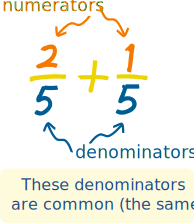

Least Common Denominator
What is a ...
... Denominator?
The denominator is the bottom number in a fraction.
It shows how many equal parts the item is divided into

... Common Denominator?
When the denominators of two or more fractions are the same, they have Common Denominators.
... Least Common Denominator?
it is the smallest of all the common denominators.
Why?
Why do we want common denominators?
Because we can't add fractions with different denominators:
| 1 3 | + | 1 6 | = | ? |
 |
 |
Before we can add them we must make the denominators the same.
Finding a Common Denominator
But what should the new denominator be?
One simple answer is to multiply the current denominators together:
3 × 6 = 18
So instead of having 3 or 6 slices, we will make both of them have 18 slices.
The pizzas now look like this:
| 6 18 | + | 3 18 | = | 9 18 |
They now have common denominators (but not the least common denominator)
(Read more about Common Denominators.)
Least Common Denominator
That is all fine, but 18 is a lot of slices ... can we do it with fewer slices?
Here is how to find out:
| 1 3 | List multiples of 3: | 3, 6, 9, 12, 15, 18, 21, ... | |
| 1 6 | List multiples of 6: | 6, 12, 18, 24, ... |
Now find the smallest number that is the same:
| multiples of 3: | 3, 6, 9, 12, 15, 18, 21, ... | |
| multiples of 6: | 6, 12, 18, 24, ... |
The answer is 6, and that is the Least Common Denominator.
So let us try using it!
We want both fractions to have 6 slices:
- When we multiply top and bottom of 1 3 by 2 we get 2 6
- 1 6 already has a denominator of 6
And our question now looks like:
| 2 6 | + | 1 6 | = | 3 6 | ||
|
 |
One last step is to simplify the fraction (if possible). In this case 3/6 is simpler as 1/2:
| 2 6 | + | 1 6 | = | 3 6 | = | 1 2 |
|
|
And that is what the Least Common Denominator is all about.
It lets us add (or subtract) fractions using the least number of slices.
What Did We Do?
The trick was to list the multiples of each denominator, then find the Least Common Multiple
In the previous example the Least Common Multiple of 3 and 6 was 6.
In other words the Least Common Denominator of 1 3 and 1 6 is 6.
Here are the steps to follow:
|
Example: What is 1 6 + 7 15 ?
The Denominators are 6 and 15:
| multiples of 6: | 6, 12, 18, 24, 30, 36, ... | |
| multiples 15: | 15, 30, 45, 60, ... |
So the Least Common Multiple of 6 and 15 is 30.
Now let's try to make the denominators the same.
Note: what we do to the bottom of the fraction,
we must also do to the top
For the first fraction we can multiply top and bottom by 5 to get a denominator of 30:
| × 5 | ||
| 16 | = | 530 |
| × 5 | ||
For the second fraction we can multiply top and bottom by 2 to get a denominator of 30:
| × 2 | ||
| 715 | = | 1430 |
| × 2 | ||
Now we can do the addition by adding the top numbers:
5 30 + 14 30 = 19 30
The fraction is already as simple as it can be, so that is the answer.
Least Common Multiple Tool
To find the least common denominator automatically use the Least Common Multiple Tool. Just put in the denominators, press the button, and the least common denominator is shown.One More Example
Example: What is 3 8 + 5 12 ?
List the multiples of 8 and 12
| multiples of 8: | 8, 16, 24, 32, 40, ... | |
| multiples 12: | 12, 24, 36, 48, ... |
The Least Common Multiple is 24
For the first fraction we can multiply top and bottom by 3 to get a denominator of 24:
| × 3 | ||
| 38 | = | 924 |
| × 3 | ||
For the second fraction we can multiply top and bottom by 2 to get a denominator of 24:
| × 2 | ||
| 512 | = | 1024 |
| × 2 | ||
Now we can do the addition:
9 24 + 10 24 = 19 24
The fraction is already as simple as it can be, so that is the answer.